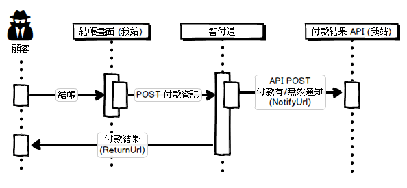

<!DOCTYPE html>
<html>
<head><meta name="generator" content="Hexo 3.8.0">
  <meta charset="utf-8">
  <title>智付通金流整合 | The name is Alex</title>
  <meta name="viewport" content="width=device-width,initial-scale=1,maximum-scale=1,minimum-scale=1">
  <meta name="description" content="今年初用 rails 做了個系統與智付通的金流整合。整合過程其實蠻單純的，稍微將實做整合的過程記錄在這邊。 當初整合智付通的流程是，使用者在我站挑選要購買的商品後，到結帳頁面輸入送貨地址，是否要開索取發票，是否使用折價卷或點數扣抵等等資訊。後。將使用者與確認完整的購買資訊 POST 到智付通的付款頁面。待使用者付款完成後，智付通會將使用者再導回我站，並且傳回付款結果等資訊告知我站是否已成功付款；同">
<meta name="keywords" content="ruby">
<meta property="og:type" content="article">
<meta property="og:title" content="智付通金流整合">
<meta property="og:url" content="http://alexpacer.github.io/posts/761f59e/index.html">
<meta property="og:site_name" content="The name is Alex">
<meta property="og:description" content="今年初用 rails 做了個系統與智付通的金流整合。整合過程其實蠻單純的，稍微將實做整合的過程記錄在這邊。 當初整合智付通的流程是，使用者在我站挑選要購買的商品後，到結帳頁面輸入送貨地址，是否要開索取發票，是否使用折價卷或點數扣抵等等資訊。後。將使用者與確認完整的購買資訊 POST 到智付通的付款頁面。待使用者付款完成後，智付通會將使用者再導回我站，並且傳回付款結果等資訊告知我站是否已成功付款；同">
<meta property="og:locale" content="tw">
<meta property="og:image" content="http://alexpacer.github.io/posts/761f59e/spgateway-integration.png">
<meta property="og:updated_time" content="2019-10-02T03:53:13.176Z">
<meta name="twitter:card" content="summary">
<meta name="twitter:title" content="智付通金流整合">
<meta name="twitter:description" content="今年初用 rails 做了個系統與智付通的金流整合。整合過程其實蠻單純的，稍微將實做整合的過程記錄在這邊。 當初整合智付通的流程是，使用者在我站挑選要購買的商品後，到結帳頁面輸入送貨地址，是否要開索取發票，是否使用折價卷或點數扣抵等等資訊。後。將使用者與確認完整的購買資訊 POST 到智付通的付款頁面。待使用者付款完成後，智付通會將使用者再導回我站，並且傳回付款結果等資訊告知我站是否已成功付款；同">
<meta name="twitter:image" content="http://alexpacer.github.io/posts/761f59e/spgateway-integration.png">
  <link rel="icon" href="/favicon.ico">
  

  <link rel="stylesheet" href="https://cdnjs.cloudflare.com/ajax/libs/bulma/0.6.1/css/bulma.min.css">
  <link rel="stylesheet" href="https://maxcdn.bootstrapcdn.com/font-awesome/4.7.0/css/font-awesome.min.css">
  <link rel="stylesheet" href="/css/style.css">
  
    <link rel="stylesheet" href="/css/prism.css">
  
  
<script type="application/ld+json">
  {
  "@context": "http://schema.org",
  "@type": "BlogPosting",
  "headline": "智付通金流整合",
  "name": "智付通金流整合",
  "datePublished": "2017-12-12T05:50:16.000Z",
  "dateModified": "2019-10-02T03:53:13.176Z",
  "mainEntityOfPage": {
    "@type": "WebPage",
    "@id": "http://alexpacer.github.io/posts/761f59e/index.html"
  },
  "author": {
    "@type": "Person",
    "name": "Alex Wei",
    "image": "/images/avatar.jpg"
  },
  "publisher": {
    "@type": "Organization",
    "name": "Alex Wei",
    "logo": {
      "@type": "ImageObject",
      "url": "/images/avatar.jpg"
    }
  }
}
</script>

  
  
    <script src="/js/prism.js"></script>
  
  <!-- <link href="/css/prism.css" rel="stylesheet" /> -->
  <link href="/css/prism-line-numbers.css" rel="stylesheet">
<link rel="stylesheet" href="/css/prism-twilight.css" type="text/css"></head>
</html>
<body>
  

  <header class="navbar" role="navigation" aria-label="main navigation">
  <div class="navbar-brand">
    <a href="/" class="navbar-item">
      The name is Alex
    </a>
  </div>
</header>

  <div class="container">
    <div class="columns">
      <div class="main column is-8">
        <article class="post">
  <figure class="post-thumbnail">
    

  </figure>
  <span>2017-12-12
</span>
  <h1 class="title">智付通金流整合</h1>
  
  <div class="tags">
    
      <a class="tag" href="/tags/ruby/">ruby</a>
    
  </div>


  <div class="content">
    <p>今年初用 rails 做了個系統與智付通的金流整合。整合過程其實蠻單純的，稍微將實做整合的過程記錄在這邊。</p>
<p>當初整合智付通的流程是，使用者在我站挑選要購買的商品後，到結帳頁面輸入送貨地址，是否要開索取發票，是否使用折價卷或點數扣抵等等資訊。後。將使用者與確認完整的購買資訊 POST 到智付通的付款頁面。待使用者付款完成後，智付通會將使用者再導回我站，並且傳回付款結果等資訊告知我站是否已成功付款；同時背景也會呼叫我站的 Notify URL。</p>
<p></p>
<p>大概整合內容如上，很簡單。</p>
<p>幾個整合的重點：</p>
<ul>
<li>跳轉到智付通的頁面要用 Form POST 把玩家導過去，要整頁導過去。智付通文件有說明放 iframe 裡導頁會有問題。</li>
<li>智付通回饋付款結果有兩個<ul>
<li>ReturnURL (前景) 讓使用者在付款完後(不管成功失敗) 導回 ReturnURL</li>
<li>NotifyURL (背景) 會在背景把支付完後的資訊打給 NotifyURL</li>
</ul>
</li>
<li>加解密的方式</li>
</ul>
<p>這邊遇到一點問題的就是加解密，所以說明一下。其他頁面跳轉大部分的金流好像都差不多。</p>
<h3 id="加解密的方式"><a href="#加解密的方式" class="headerlink" title="加解密的方式"></a>加解密的方式</h3><p>整個加密重點在這段，智付通的 API 文件上提供 <code>mcrypt_encrypt(CRYPT_RIJNDAEL_128, key, CRYPT_MODE_CBC, iv)</code> (PHP) 與 <code>RijndaelManaged()</code> (.NET) 的 AES 加密範例可參考。</p>
<p>用 ruby 有遇到一點麻煩，因為先參考了mcrypt 的範例，一開始就直接用 OpenSSL 來加密，但是 encrypt 出的字串與智富通的不合。參考<a href="https://stackoverflow.com/questions/25548907/rijndael-128-ruby-without-mcrypt" target="_blank" rel="noopener">這篇 Stack Overflow 的答案</a>可知，在 ruby 裡用 OpenSSL::Cipher 與 mcrypt 執行起來的行為是不一樣的。將 256 bit 的 key 傳入 mcrypt( ) 他會自己改為 rijndael-256 的編碼，而 OpenSSL::Cipher 只會拿前 128 bits 。</p>
<blockquote>
<p>而智付通給的key 是 256 bits 的</p>
</blockquote>
<p>權衡之下，還是用了 php-mcrypt ….讓 mcrypt 自己去調整編碼方式</p>
<pre class=" language-ruby"><code class="language-ruby"><span class="token comment" spellcheck="true"># 這個 hash 轉成 QUERY STRING 涵式是這邊抄來的: </span>
<span class="token comment" spellcheck="true"># https://justanothercoder.wordpress.com/2009/04/24/converting-a-hash-to-a-query-string-in-ruby/</span>
payload_str <span class="token operator">=</span> <span class="token constant">Common</span><span class="token punctuation">:</span><span class="token symbol">:hash_to_querystring</span><span class="token punctuation">(</span><span class="token variable">@payload</span><span class="token punctuation">)</span>

<span class="token comment" spellcheck="true"># 加密 payload</span>

crypto <span class="token operator">=</span> <span class="token constant">Mcrypt</span><span class="token punctuation">.</span><span class="token keyword">new</span><span class="token punctuation">(</span><span class="token symbol">:rijndael_128</span><span class="token punctuation">,</span> <span class="token symbol">:cbc</span><span class="token punctuation">,</span> key<span class="token punctuation">,</span> iv<span class="token punctuation">,</span> <span class="token symbol">:pkcs</span><span class="token punctuation">)</span>
ciphertext <span class="token operator">=</span> crypto<span class="token punctuation">.</span><span class="token function">encrypt</span><span class="token punctuation">(</span>payload_str<span class="token punctuation">)</span>

ciphertext<span class="token punctuation">.</span><span class="token function">unpack</span><span class="token punctuation">(</span><span class="token string">"H*"</span><span class="token punctuation">)</span><span class="token punctuation">.</span><span class="token function">join</span><span class="token punctuation">(</span><span class="token punctuation">)</span>
</code></pre>
<p>最後，組出單向的核對字串：</p>
<pre class=" language-ruby"><code class="language-ruby"><span class="token keyword">def</span> <span class="token function">trade_sha</span><span class="token punctuation">(</span>tradeInfo<span class="token punctuation">)</span>
    key <span class="token operator">=</span> <span class="token constant">Settings</span><span class="token punctuation">.</span>payment<span class="token punctuation">.</span>spgateway<span class="token punctuation">.</span>key
    iv <span class="token operator">=</span> <span class="token constant">Settings</span><span class="token punctuation">.</span>payment<span class="token punctuation">.</span>spgateway<span class="token punctuation">.</span>iv

    <span class="token constant">Digest</span><span class="token punctuation">:</span><span class="token symbol">:SHA256</span><span class="token punctuation">.</span><span class="token function">hexdigest</span><span class="token punctuation">(</span><span class="token string">"HashKey=<span class="token interpolation"><span class="token delimiter tag">#{</span>key<span class="token delimiter tag">}</span></span>&amp;<span class="token interpolation"><span class="token delimiter tag">#{</span>tradeInfo<span class="token delimiter tag">}</span></span>&amp;HashIV=<span class="token interpolation"><span class="token delimiter tag">#{</span>iv<span class="token delimiter tag">}</span></span>"</span><span class="token punctuation">)</span><span class="token punctuation">.</span>upcase
<span class="token keyword">end</span>
</code></pre>
<p><a href="https://gist.github.com/alexpacer/661de006edadc5cd28fec41f6c3fd361" target="_blank" rel="noopener">完整的加密 Gist</a></p>
<p>在智付通把使用者導回 ReturnURL 的時後同時也會送來一串交易結果的 payload，這個 payload 的解密方式如下</p>
<pre class=" language-ruby"><code class="language-ruby"><span class="token keyword">def</span> decrypt
    key <span class="token operator">=</span> <span class="token constant">Settings</span><span class="token punctuation">.</span>payment<span class="token punctuation">.</span>spgateway<span class="token punctuation">.</span>key
    iv <span class="token operator">=</span> <span class="token constant">Settings</span><span class="token punctuation">.</span>payment<span class="token punctuation">.</span>spgateway<span class="token punctuation">.</span>iv

    crypto <span class="token operator">=</span> <span class="token constant">Mcrypt</span><span class="token punctuation">.</span><span class="token keyword">new</span><span class="token punctuation">(</span><span class="token symbol">:rijndael_128</span><span class="token punctuation">,</span> <span class="token symbol">:cbc</span><span class="token punctuation">,</span> key<span class="token punctuation">,</span> iv<span class="token punctuation">)</span>
    plaintext <span class="token operator">=</span> crypto<span class="token punctuation">.</span><span class="token function">decrypt</span><span class="token punctuation">(</span><span class="token punctuation">[</span><span class="token variable">@payload</span><span class="token punctuation">]</span><span class="token punctuation">.</span><span class="token function">pack</span><span class="token punctuation">(</span><span class="token string">'H*'</span><span class="token punctuation">)</span><span class="token punctuation">)</span>

    <span class="token comment" spellcheck="true"># 移除解密後多出來的 padding</span>
    <span class="token comment" spellcheck="true"># 因為知道加密的內容是 JSON 所以可以用這樣的懶惰方式移除 padding...</span>
    plaintext<span class="token punctuation">[</span><span class="token number">0</span><span class="token punctuation">,</span> plaintext<span class="token punctuation">.</span><span class="token function">rindex</span><span class="token punctuation">(</span><span class="token string">'}'</span><span class="token punctuation">)</span> <span class="token operator">+</span> <span class="token number">1</span><span class="token punctuation">]</span>
<span class="token keyword">end</span>
</code></pre>
<p>記得好像就醬，目前好像開立電子發票，信用卡請款等等都可用上述的方式加解密。整合來說並不算太複雜。</p>
<p>複雜的反而是開電子發票後如果客人要退貨，依照相關法規要退發票重新申報這些。如果可以直接進智付通後台操作那就還好…不然靠 API 要弄電子發票真的很繁雜….</p>

  </div>
  
<nav class="footer-nav">
  
    <div class="footer-nav__prev">
      <div class="footer-nav__label">
        較新的那篇
      </div>
      <a href="/posts/ebf2f33a/">
        Redis cluster on CentOs
      </a>
    </div>
  
  
    <div class="footer-nav__next">
      <div class="footer-nav__label">
        較舊的那篇
      </div>
      <a href="/posts/aef35089/">
        初試 Dapper
      </a>
    </div>
  
</nav>


</article>


      </div>
      <div class="sidebar column is-4">
        <aside>
  
    <aside class="search widget">
  <form action="//google.com/search" method="get" accept-charset="UTF-8" class="search-form" target="_blank">
    <div class="control has-icons-right">
      <input type="search" name="q" class="input" placeholder="搜尋">
      <span class="icon is-small is-right">
        <i class="fa fa-search"></i>
      </span>
    </div>
    <input type="hidden" name="sitesearch" value="http://alexpacer.github.io">
  </form>
</aside>

  
    <div class="widget-wrap">
  <div class="widget-title">作者</div>
  <aside class="profile media widget">
    <figure class="profile-avatar media-left">
      
    </figure>
    <div class="media-content">
      <p>
        <strong>
          <span>Alex Wei</span>
          <span class="icon">
            <a href="https://github.com/alexpacer" target="_blank">
              <i class="fa fa-github"></i>
            </a>
          </span>
        </strong>
        <br>
        <span></span>
      </p>
    </div>
  </aside>
</div>

  
    
  <div class="widget-wrap">
    <div class="widget-title">最近更新</div>
    <div class="widget">
      <ul class="recent-post">
        
          <li class="recent-post-item media">
            <figure class="media-left">
              

            </figure>
            <div class="media-content">
              <p class="">
                <a href="/posts/d974dd78/" class="">
                  WebDeployment 的一些前置設定
                </a>
              </p>
              <p class="">
                <small>
                  2019-06-21

                </small>
              </p>
            </div>
          </li>
        
          <li class="recent-post-item media">
            <figure class="media-left">
              

            </figure>
            <div class="media-content">
              <p class="">
                <a href="/posts/904aaacf/" class="">
                  ASP.net Core (2.2) 整理 1 :: [Auth &amp; Authorize]
                </a>
              </p>
              <p class="">
                <small>
                  2019-02-14

                </small>
              </p>
            </div>
          </li>
        
          <li class="recent-post-item media">
            <figure class="media-left">
              

            </figure>
            <div class="media-content">
              <p class="">
                <a href="/posts/17bf5966/" class="">
                  Windows Server 安裝 RabbitMQ
                </a>
              </p>
              <p class="">
                <small>
                  2018-12-12

                </small>
              </p>
            </div>
          </li>
        
          <li class="recent-post-item media">
            <figure class="media-left">
              

            </figure>
            <div class="media-content">
              <p class="">
                <a href="/posts/ebf2f33a/" class="">
                  Redis cluster on CentOs
                </a>
              </p>
              <p class="">
                <small>
                  2018-04-27

                </small>
              </p>
            </div>
          </li>
        
          <li class="recent-post-item media">
            <figure class="media-left">
              

            </figure>
            <div class="media-content">
              <p class="">
                <a href="/posts/761f59e/" class="">
                  智付通金流整合
                </a>
              </p>
              <p class="">
                <small>
                  2017-12-12

                </small>
              </p>
            </div>
          </li>
        
      </ul>
    </div>
  </div>


  
    
  <div class="widget-wrap">
    <h3 class="widget-title">標籤雲</h3>
    <div class="widget">
      <a href="/tags/net/" style="font-size: 10px;">.net</a> <a href="/tags/IIS-WebDeploy/" style="font-size: 10px;">IIS, WebDeploy</a> <a href="/tags/asp-net-core/" style="font-size: 10px;">asp.net-core</a> <a href="/tags/elk/" style="font-size: 10px;">elk</a> <a href="/tags/nginx/" style="font-size: 10px;">nginx</a> <a href="/tags/rabbit-mq/" style="font-size: 10px;">rabbit-mq</a> <a href="/tags/rails/" style="font-size: 20px;">rails</a> <a href="/tags/redis/" style="font-size: 10px;">redis</a> <a href="/tags/ruby/" style="font-size: 10px;">ruby</a> <a href="/tags/unit-testing/" style="font-size: 10px;">unit-testing</a>
    </div>
  </div>


  
    
  <div class="widget-wrap">
    <h3 class="widget-title">封存</h3>
    <div class="widget">
      <ul class="archive-list"><li class="archive-list-item"><a class="archive-list-link" href="/archives/2019/06/">June 2019</a><span class="archive-list-count">1</span></li><li class="archive-list-item"><a class="archive-list-link" href="/archives/2019/02/">February 2019</a><span class="archive-list-count">1</span></li><li class="archive-list-item"><a class="archive-list-link" href="/archives/2018/12/">December 2018</a><span class="archive-list-count">1</span></li><li class="archive-list-item"><a class="archive-list-link" href="/archives/2018/04/">April 2018</a><span class="archive-list-count">1</span></li><li class="archive-list-item"><a class="archive-list-link" href="/archives/2017/12/">December 2017</a><span class="archive-list-count">2</span></li><li class="archive-list-item"><a class="archive-list-link" href="/archives/2017/06/">June 2017</a><span class="archive-list-count">4</span></li></ul>
    </div>
  </div>


  
    <div class="widget-wrap">
    <h3 class="widget-title">連結</h3>
    <div class="widget">
        <ul style="list-style: circle">
            <li>
                <a href="https://blog.ryantseng.me/" class="">
                    Ryan - 不務正業 全端 開發記事
                </a>
            </li>

            <li>
                <a href="https://eugenesu0515.github.io/Blog/" class="">
                    Eugene
                </a>
            </li>
        </ul>
    </div>
</div>

  
</aside>

      </div>
    </div>
  </div>
  <footer class="footer">
  <div class="container">
    <div class="content has-text-centered">
      <p>
        <a rel="license" href="http://creativecommons.org/licenses/by-nc/4.0/"></a><br>This blog is licensed under a <a rel="license" href="http://creativecommons.org/licenses/by-nc/4.0/">Creative Commons Attribution-NonCommercial 4.0 International License</a>.
        

        <!-- 
          <br />
          <span xmlns:cc="http://creativecommons.org/ns#" property="cc:attributionName">Alex Wei</span>'s Workを著作者とするこの作品は<a rel="license" href="http://creativecommons.org/licenses/by-sa/4.0/">クリエイティブ・コモンズの 表示 - 継承 4.0 国際 ライセンス</a>で提供されています。 -->
      </p>
    </div>
  </div>
</footer>


  
</body>
</html>
